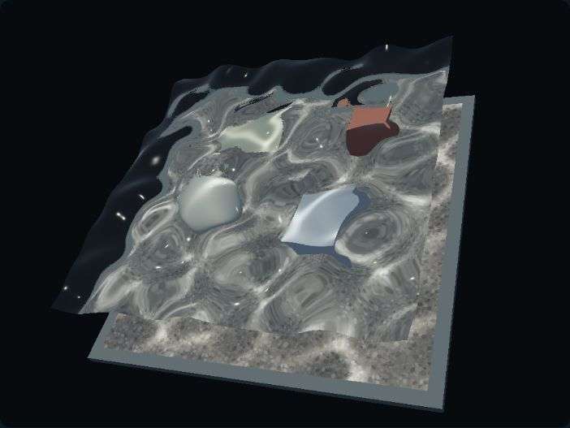

water — PBR water surface and caustics
English | 日本語

Overview
A small integration example applying caustics to a floor, sphere, box, and slope, with an independently switchable water surface. WaterBody stores the water region, waves, absorption, and registered receivers. ComputeEffectPipeline.setWater() owns GPU resources and composition order. Applications connect water through this public API while retaining the standard rendering sequence.
Run
Open water.html from an HTTP server serving the repository. Use a WebGPU browser on localhost or HTTPS. Enable caustics and water separately, select receivers, move the sphere, animate waves, or change caustic quality. Drag to orbit and scroll to zoom. The verification button runs explicit GPU image comparisons; normal rendering does not read images back.
Connect water
Caustics currently require a vertical downward directional light. Use lightDirection: [0, -1, 0] and shadow: { directional: { up: [0, 0, 1] } } when creating the pipeline. The same configuration is accepted in PbrRenderer's pipeline options.
import WaterBody from "../../webg/WaterBody.js";
const water = new WaterBody({
origin: [0, 0, 0], width: 8, depth: 8, extent: 20,
surfaceHeight: 2, amplitude: 0.15,
waveMix: [1, 0.4, 0.2], absorption: [0.09, 0.035, 0.025]
});
water.addReceiver(floorShape);
water.addReceiver(objectNode, { children: true, strength: 0.7 });
await pipeline.setWater(water, {
surfaceEnabled: true, causticsEnabled: true, quality: "low"
});
water.setTime(timeMs / 1000);
Pause frame generation while awaiting setWater(). Continue using the normal renderScene() and encode() calls afterwards. PbrRenderer exposes the same setWater() and getWaterStats() methods; WaterBody is also exported from webg/app/index.js.
Update parameters through water.setOptions(), without reconnecting. waveMix gives relative weights for crossing waves, swell, and ripples. speed, variation, and wavelength control their evolution. absorption is RGB Beer–Lambert absorption in 1/m; [0.07, 0.015, 0.07] produces greener transmission. roughness controls GGX water reflection. Invalid patches preserve the previous settings.
Shape registration overrides Node registration, including strength: 0. The nearest registered ancestor wins; children: false limits a Node to its own shapes. removeReceiver() and clearReceivers() preserve geometry and materials. Use await pipeline.setWater(null) to release every water GPU resource and the additional lighting variant.
Composition and performance
Caustics modify the registered opaque receiver's direct diffuse reflection. Specular, IBL, local lights, and emissive retain their existing paths. Wave height controls a smooth transition at the waterline.
Water combines screen-space refraction, IOR Fresnel, RGB absorption, GGX directional specular, and the current PBR environment in linear HDR. Alpha Blend fragments and Compute particles are split at water depth: underwater fragments enter the refracted background, while foreground fragments are drawn afterwards. Particle simulation updates once per frame. Fog, DoF, Bloom, Tone Map, and Edge run afterwards, with combined water depth and normals where needed.
low uses 512² rays and a 256² field; high uses 1024² rays and a 512² field. Both use 48 refraction steps. A paused caustic field is reused. With both features OFF, water resources are released and rendering uses the ordinary lighting path. Water-only and caustics-only allocate their respective resources independently.
Standard PbrRenderer.createFrameCallbacks() collects timing at the next frame. With a custom loop, call pipeline.afterGpuSubmit() or renderer.afterGpuSubmit() immediately after queue submission.
getWaterStats() exposes dispatch/pass counts and asynchronous GPU timestamps. Timestamp support may be unavailable. Timing covers field generation, surface compute, and depth transfer; it excludes receiver-mask rendering, additional lighting cost, and translucent rendering. Resource figures are logical buffer/texture capacities, not driver memory measurements.
The sample supports one finite horizontal region viewed from above. Underwater cameras, water side walls, offscreen refraction, reflected scene geometry, and physical combination with underwater Frost/Transmission/Volume are outside its scope. Caustics are a horizontal-field projection approximation for arbitrary opaque receivers, rather than exact per-mesh ray intersections.
Source guide
Read main.js for connection and lifecycle, scene.js/floor.js for receivers and procedural materials, and validation.js for GPU regression checks. Core configuration is in WaterBody.js, resource ownership in WaterSystem.js. Book chapters 30–33 cover PBR and chapter 35 covers water; pbr_reference compares PBR lighting and transmission demonstrates regular transparent refraction.